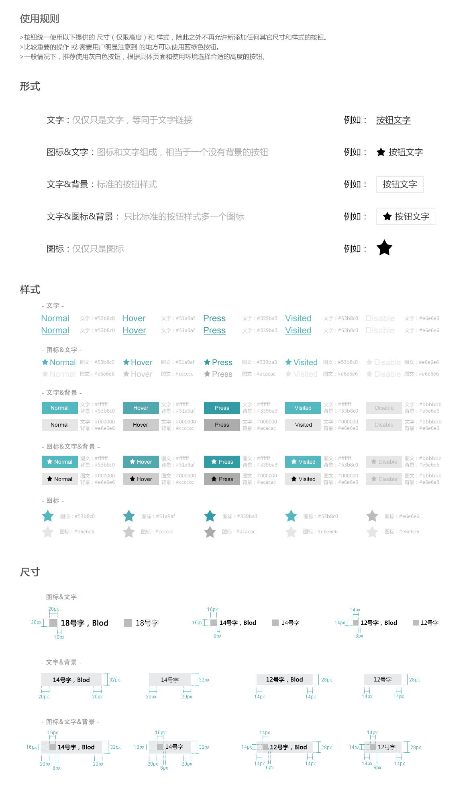

<h1>设计规范</h1>
<!--按钮统一使用下面提供的高度和样式，最好不要自己添加新的尺寸和样式（但是可以把其中某些样式进行重载）。-->
<!--一般情况下推荐使用灰白色按钮，根据具体的页面和使用环境来选择。-->
<!--比较重要的操作或者需要用户明显注意到的地方使用蓝色按钮。-->
<!--黄色按钮请谨慎使用，在非常重要和特殊的情况下需要用户迅速发现并立即处理的时候使用，一个页面不能超过一个黄色按钮。-->
